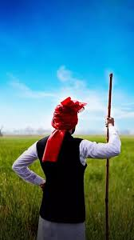
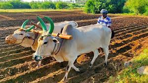
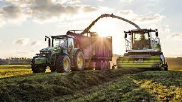

INDIAN AGRICULTURE

- The history of agriculture in India dates back to the Neolithic period. India ranks second worldwide in farm outputs. As per the Indian economic survey 2020 -21, agriculture employed more than 50% of the Indian workforce and contributed 20.2% to the country's GDP.
- In 2016, agriculture and allied sectors like animal husbandry, forestry and fisheries accounted for 17.5% of the GDP (gross domestic product) with about 41.49% of the workforce in 2020 India ranks first in the world with highest net cropped area followed by US and China. The economic contribution of agriculture to India's GDP is steadily declining with the country's broad-based economic growth. Still, agriculture is demographically the broadest economic sector and plays a significant role in the overall socio-economic fabric of India.
- The total agriculture commodities export was US$3.50 billion in March - June 2020. India exported $38 billion worth of agricultural products in 2013, making it the seventh-largest agricultural exporter worldwide and the sixth largest net exporter. Most of its agriculture exports serve developing and least developed nations. Indian agricultural/horticultural and processed foods are exported to more than 120 countries, primarily to the Japan, Southeast Asia, SAARC countries, the European Union and the United States.
Defination Of Farmer
Indian farmers are people who grow crops as a profession. Various government estimates (Census, Agricultural Census, National Sample Survey assessments, and Periodic Labour Force Surveys) give a different number of farmers in the country ranging from 37 million to 118 million as per the different definitions. Some definitions take in to account the number of holdings as compared to the number of farmers. Other definitions take into account possession of land, while others try to delink land ownership from the definition of a farmer. Other terms also used include 'cultivator'.

Overview



- As per the 2014 FAO world agriculture statistics India is the world's largest producer of many fresh fruits like banana, mango, guava, papaya, lemon and vegetables like chickpea, okra and milk, major spices like chili pepper, ginger, fibrous crops such as jute, staples such as millets and castor oil seed. India is the second largest producer of wheat and rice, the world's major food staples.
- India is currently the world's second largest producer of several dry fruits, agriculture-based textile raw materials, roots and tuber crops, pulses, farmed fish, eggs, coconut, sugarcane and numerous vegetables. India is ranked under the world's five largest producers of over 80% of agricultural produce items, including many cash crops such as coffee and cotton, in 2010. India is one of the world's five largest producers of livestock and poultry meat, with one of the fastest growth rates, as of 2011.
- One report from 2008 claimed that India's population is growing faster than its ability to produce rice and wheat. While other recent studies claim that India can easily feed its growing population, plus produce wheat and rice for global exports, if it can reduce food staple spoilage/wastage, improve its infrastructure and raise its farm productivity like those achieved by other developing countries such as Brazil and China.
- In fiscal year ending June 2011, with a normal monsoon season, Indian agriculture accomplished an all-time record production of 85.9 million tonnes of wheat, a 6.4% increase from a year earlier. Rice output in India hit a new record at 95.3 million tonnes, a 7% increase from the year earlier. Lentils and many other food staples production also increased year over year. Indian farmers, thus produced about 71 kilograms of wheat and 80 kilograms of rice for every member of Indian population in 2011. The per capita supply of rice every year in India is now higher than the per capita consumption of rice every year in Japan.
- India exported $39 billion worth of agricultural products in 2013, making it the seventh largest agricultural exporter worldwide, and the sixth largest net exporter. This represents explosive growth, as in 2004 net exports were about $5 billion. India is the fastest growing exporter of agricultural products over a 10-year period, its $39 billion of net export is more than double the combined exports of the European Union (EU-28). It has become one of the world's largest supplier of rice, cotton, sugar and wheat. India exported around 2 million metric tonnes of wheat and 2.1 million metric tonnes of rice in 2011 to Africa, Nepal, Bangladesh and other regions around the world.
- Aquaculture and catch fishery is amongst the fastest growing industries in India. Between 1990 and 2010, the Indian fish capture harvest doubled, while aquaculture harvest tripled. In 2008, India was the world's sixth largest producer of marine and freshwater capture fisheries and the second largest aquaculture farmed fish producer. India exported 600,000 metric tonnes of fish products to nearly half of the world's countries. Though the available nutritional standard is 100% of the requirement, India lags far behind in terms of quality protein intake at 20% which is to be tackled by making available protein rich food products such as eggs, meat, fish, chicken etc. at affordable prices.
- India has shown a steady average nationwide annual increase in the mass-produced per hectare for some agricultural items, over the last 60 years. These gains have come mainly from India's green revolution, improving road and power generation infrastructure, knowledge of gains and reforms. Despite these recent accomplishments, agriculture has the potential for major productivity and total output gains, because crop yields in India are still just 30% to 60% of the best sustainable crop yields achievable in the farms of developed and other developing countries. Additionally, post harvest losses due to poor infrastructure and unorganised retail, caused India to experience some of the highest food losses in the world.
- One of India's major agricultural products, rice, is suffering as a result of shifting monsoon patterns. States in the East and Northeast of the country (Uttar Pradesh, Bihar, and Odisha), have experienced high temperatures and insufficient rainfall in 2022, in contrast to Central and Southern India, which has experienced excessive rain in recent months, resulting in flooding in the Southern states of Kerala, Karnataka, and Madhya Pradesh.
- The rice crop this season is therefore anticipated to decrease by roughly 6.77 million tonnes to 104.99 million, according to India's ministry of agriculture.
History
- Vedic literature provides some of the earliest written record of agriculture in India. Rigveda hymns, for example, describes ploughing, fallowing, irrigation, fruit and vegetable cultivation. Other historical evidence suggests rice and cotton were cultivated in the Indus Valley, and ploughing patterns from the Bronze Age have been excavated at Kalibangan in Rajasthan. Bhumivargaha, an Indian Sanskrit text, suggested to be 2500 years old, classifies agricultural land into 12 categories: urvara (fertile), ushara (barren), maru (desert), aprahata (fallow), shadvala (grassy), pankikala (muddy), jalaprayah (watery), kachchaha (contiguous to water), sharkara (full of pebbles and pieces of limestone), sharkaravati (sandy), nadimatruka (watered from a river), and devamatruka (rainfed). Some archaeologists believe that rice was a domesticated crop along the banks of the river Ganges in the sixth millennium BC. So were species of winter cereals (barley, oats, and wheat) and legumes (lentil and chickpea) grown in northwest India before the sixth millennium BC.[citation needed] Other crops cultivated in India 3000 to 6000 years ago, include sesame, linseed, safflower, mustard, castor, mung bean, black gram, horse gram, pigeon pea, field pea, grass pea (khesari), fenugreek, cotton, jujube, grapes, dates, jack fruit, mango, mulberry, and black plum[citation needed]. Indians might have domesticated buffalo (the river type) 5000 years ago.
- According to some scientists agriculture was widespread in the Indian peninsula, 10000–3000 years ago, well beyond the fertile plains of the north. For example, one study reports 12 sites in the southern Indian states of Tamil Nadu, Andhra Pradesh and Karnataka providing clear evidence of agriculture of pulses Vigna radiata and Macrotyloma uniflorum, millet-grasses (Brachiaria ramosa and Setaria verticillata), wheats (Triticum dicoccum, Triticum durum/aestivum), barley (Hordeum vulgare), hyacinth bean (Lablab purpureus), sorghum (Sorghum bicolor), pearl millet (Pennisetum glaucum), finger millet (Eleusine coracana), cotton (Gossypium sp.), linseed (Linum sp.), as well as gathered fruits of Ziziphus and two Cucurbitaceae.
- Some claim Indian agriculture began by 9000 BC as a result of early cultivation of plants, and domestication of crops. Settled life soon followed with implements and techniques being developed for agriculture. Double monsoons led to two harvests being reaped in one year. Indian products soon reached trading networks and foreign crops were introduced. Plants and animals—considered esses "reeds that produce honey without bees" being grown. These were locally called साखर, (Sākhara). On their return journey soldiers carried the "honey bearing reeds," thus spreading sugar and sugarcane agriculture. People in India had invented, by about 500 BC, the process to produce sugar crystals. In the local language, these crystals were called khanda (खण्ड), which is the source of the word candy.
- Before the 18th century, cultivation of sugarcane was largely confined to India. A few merchants began to trade in sugar – a luxury and an expensive spice in Europe until the 18th century. Sugar became widely popular in 18th-century Europe, then graduated to become a human necessity in the 19th century all over the world. Sugarcane plantations, just like cotton farms, became a major driver of large and forced human migrations in the 19th century and early 20th century – of people from Africa and from India, both in millions – influencing the ethnic mix, political conflicts and cultural evolution of Caribbean, South American, Indian Ocean and Pacific Island nations.
- The history and past accomplishments of Indian agriculture thus influenced, in part, colonialism, slavery and slavery-like indentured labour practices in the new world, Caribbean wars and world history in 18th and 19th centuries.